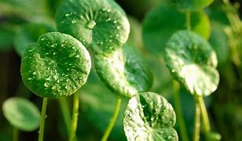

Basonym of Drug
Mandukaparni
Main Synonym
- Manduki
- Twastri
- Divya
- Mahoshadhi
Regional Name
- Bengali: thulkudi
- Gujarati: khada brahmi
- Hindi: bengsag, brahma manduki
- Tamil: vellari kirai
- Telugu: Sarasvati aku
- English: Indian pennywort
Botanical Name
Centella asiatica
Family
Umbeliferae
Classification (Gana)
- Aacharya Charak: vayasthapana, tikta skandha, prajasthapana
- Aacharya Sushruta: tikta varga
- Bhavaprakash Nighantu: guduchyadi varga
External Morphology
A small prostate herb
Useful Parts
Whole plant
Important Phytoconstituent
Asiatic acid, hydrocotylin, beta-sitosterol, centic acid, beta-caryopyllene, centoic acid
Rasa Panchak
- Rasa: tikta
- Guna: laghu
- Virya: shita
- Vipaka: madhura
Action
Kaphapittahara
Therapeutic Indication
- Medhya (boost cognitive power)
- Rasayana (rejuvenating)
- Apasmarhara (anti-epileptic)
- Vayasthapana (anti-aging)
- Sothahara (anti-inflammatory)
Therapeutic Uses
- Granthi - Leaves paste is applied to the inflamed cyst/nodule.
- Jwara - Fresh juice of the whole plant is useful to treat fever.
- Karnashoola - Oil prepared with juice is beneficial in earache.
Dose
Juice: 10-20 ml
Formulations
Adverse Effect
Not Known